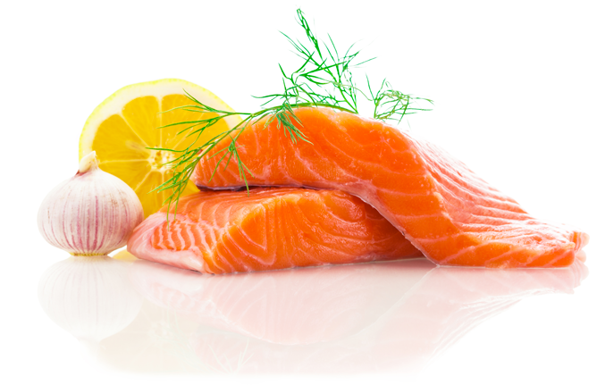
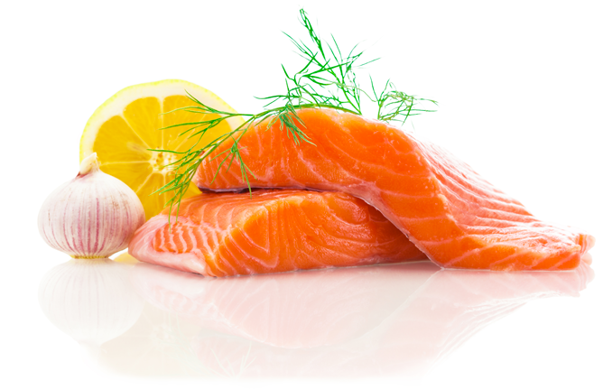

Artisans
CONTEXTE & ENJEUX
La majorité des artisans et commerçants sous-estiment le gaspillage alimentaire dans leur établissement. En 2016, le réseau des Chambres de Métiers d’Aquitaine a réalisé une enquête auprès de 2 720 entreprises artisanales des métiers de bouche.
Chaque année chez les artisans, le gaspillage alimentaire c’est en moyenne :
3 TONNES DE PRODUITS ALIMENTAIRES JETÉS, soit 9 700 € HT de perte financière par établissement.
Les filtres stabilisateurs BIOCOLD PROCESS, permettent d’assainir l’air (régulation humidité, absorption des COV) , de préserver la qualité et la fraicheur de vos produits dans les espaces réfrigérés positifs et donc de limiter significativement les pertes pendant la phase de stockage.
C'est une technologie Eco-conçue, 100% naturelle , qui ne produit pas de déchets et qui fonctionne sans intervention de votre part !
Le retour sur investissement est immédiat, car les pertes ainsi évitées permettent de financer l’équipement du frigo.
Témoignages d'utilisateurs
Le gaspillage alimentaire qui représente une perte sèche pour votre établissement n'est pas une fatalité, travaillons ensemble sur cette problématique.
Restaurateurs, boucheries & charcuteries, primeurs, poissonneries, fleuristes … Les filtres stabilisateurs Biocold Process peuvent vous aider à réduire vos pertes sans contraintes !
Ceux qui en parlent le mieux, ce sont nos clients. Je vous invite donc à visionner leurs témoignages .
 

| |
|
| |
|
| |
|
| |
|
| |
|
| |
|